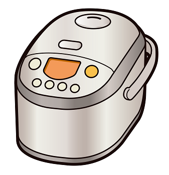

C言語の機能
この講座を見に来られた方の中には何かの目的のためにプログラミングを習得したい方がいるでしょう。
その中の方はC言語で自分が目的とするものが作れるのかが気になっているはずです。
例えば、C言語の話で説明するとC言語単体では文字を出力・加工する、演算処理、ファイルを作成する機能などは標準ライブラリを使えば実現できます。
しかし大半の人たちはそれが目的ではないと思います。
「Androidのアプリなどはどうやって作るの？」「Windowsのウインドウアプリケーションみたいなのは作れないの？」などのような疑問を持っていると持っているでしょう。
前回のセクションで紹介したコンソールアプリケーションに文字や計算結果を出力するだけのソフトを作っているようではダメだという話ですかね？
コンソールアプリケーションについて
コマンドライン(コマンドプロンプト)を使う前提のアプリケーションの事です。
ついでですが、Windowsではコマンドプロンプトをターミナル、シェル、DOS窓と呼んだりする事があるようです。
(PowerShellはWindowsが独自に用意した専用のコマンドプロンプト)
そういう意味で言うとC言語が提供しているのはプログラムのコアな部分、いわゆる表面の構築ではなく内部計算の機能しか提供されないと思ってもらっていいでしょう。
アプリケーション・プログラミング・インターフェース
皆さんが欲しがっている情報はここにあると思います。
アプリケーション・プログラミング・インターフェース。通称APIです。
APIとは、いわゆる関数のかたまり、関数とは処理のまとまったものです。
もしかしたら聞いた事ある人、知っている人もいるかもしれません。
APIとか、関数とか、処理とか色々単語が出てきましたがちょっと順番にばらして説明していきましょう。
身近なものでは家電製品の「炊飯器」がありますね。これで説明してみます。
|  |
例えば炊飯器では「炊飯する」という機能が関数に該当すると考えていきます。
「炊飯する」という関数の中には処理がたくさんあります。ばらして考えていきます。
例えば「お米を水で付け置きする」「窯の温度を上げる」「圧力を上げる」などの処理です。炊飯器のメーターに炊飯時間を表示する処理もありますね。
これらは全て炊飯器にとっては作業ですが、炊飯器を作った人はちゃんと処理として作っています。
話を戻してAPIですが、APIとして構築されるものは一般的に汎用性の高い処理をある程度の規格に則って作られる事が多いです。
炊飯器の製造メーカーの世界に実際にAPIがあるのかは知りませんが、お米を炊く機能を構築した炊飯APIが作られたとしましょう。
他のメーカーが炊飯器製造メーカーとして名乗り出た時にこの炊飯APIを使う事で、基本的な機能である炊飯する機能を開発する手間が省けます。
要するに炊飯器の大部分はAPIにまかせておいて、ニッチな売りの機能を作る事に専念する事ができるようになります。
APIを使うメリットは規格として統一された機能を簡単に使える事、開発における時間のコストを省ける事などがあります。
最初に言った「Windowsのウインドウアプリケーション」を作れるAPI、「Androidアプリ」を作れるAPIもちゃんとあります。
Android系APIはGoogleですね。Androidアプリ開発は専用の開発用ツール「Android SDK」というものがあります。これはとても強力です。
APIについてはまだまだあなたのプログラミングの世界を拡げてくれます。C言語なんてやってる場合じゃない！急げ！という方はこちらからどうぞ。
それ以外の方はまずはC言語からスタートしてゆっくりとプログラム知識の地盤を固めていきましょう。
ちなみこの入門サイトでは、WindowsAPIを使用した最新のWindowsOSで動作するGUIデスクトップアプリケーションを作成しながらC言語の学習を進めていきます。
果たして何ができるでしょうか。ふふ。頑張っていきましょう^^
次のセクションでは、前回のセクションで少し触れたサンプルコードの解説から始めていきます。